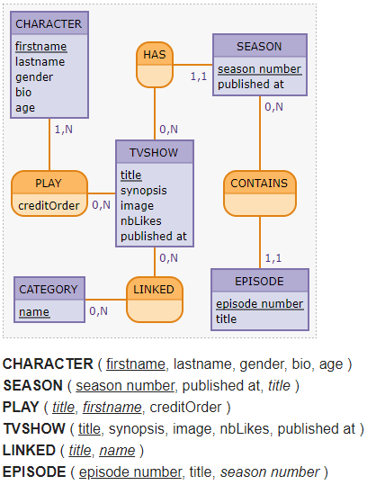

D'après le MCD suivant :
hljs CHARACTER : firstname, lastname, gender, bio, age
HAS, 0N TVSHOW, 11 SEASON
SEASON : season number, published at
PLAY, 0N TVSHOW, 1N CHARACTER: creditOrder
TVSHOW : title, synopsis, image, nbLikes, published at
CONTAINS, 0N SEASON , 11 EPISODE
CATEGORY : name
LINKED, 0N TVSHOW, 0N CATEGORY
EPISODE : episode number, title

composer create-project symfony/website-skeleton oflix.env.local (Vous pouvez nommer la DB oflix)php bin/console doctrine:database:createphp bin/console make:entitytitlesynopsisimage (url de l'image)nbLikespublishedAtcreatedAtupdatedAtseasonNumberpublishedAtcreatedAtupdatedAtepisodeNumbertitlepublishedAtcreatedAtupdatedAtetc…
Puis créez une migration et appliquez la :
php bin/console make:migration
php bin/console do:mi:mi
Créez les relations entre :
TvShow et Season : Une série peut avoir plusieurs saisons.Season et Episode : Une saison peut avoir plusieurs épisodes.Puis créez une migration et appliquez la :
php bin/console make:migration
php bin/console do:mi:mi
Créez les relations entre TvShow, Character et Category
TvShow et Character : Une série peut avoir plusieurs personnages, et 1 personnage peut joueur dans plusieurs séries.TvShow et Category : Une série peut avoir plusieurs catégories, et 1 catégorie peut être associée à plusieurs séries.Puis créez une migration et appliquez la :
php bin/console make:migration
php bin/console do:mi:mi
Si vous voulez démarrer avec quelques données, créez-en vous-même depuis Adminer.
findBy). URL = /./tvshow/./tvshow/{id}.S, les personnageS et les cat√©gorieS associ√©s‚Ķ Ca sent la boucle for on dirait üòâDans le dossier docs se trouve l'int√©gration du projet oFlix üéâ.
On y trouve
/Séries qui affichera les dernières séries publiées : /tvshow//tvshow/{id}Ma liste qui affichera vos séries préférées : /tvshow/favoriteLogin pour accéder aux contenus réservées aux personnes connectées (A ne surtout pas coder pour le moment ^^)Votre mission : l'inclure pour apporter un peu de couleur au projet actuel.
P.S. : on inclurera d'autres pages au fur et à mesure